|
Segóbriga esta situada en Saelices,
Cuenca, a 875m de altura sobre un cerro de
10ha., los arquitectos romanos tuvieron que recurrir a explanaciones y
aterramientos para dar cabida a la población. Se dotó de muralla, más por
el estatus que para defenderse, y se alzaron tres puertas monumentales: la
puerta norte entre el anfiteatro y teatro, la puerta en la parte oriental
del teatro con su torre defensiva y la puerta de la muralla occidental.
En extramuros flanqueando la puerta norte se construyó el teatro y el
anfiteatro aprovechando la pendiente de la colina y liberando a la ciudad
de espacio. Sobre el teatro, en el interior de la ciudad, se edificó unas
termas y un gimnasio que enlazaban con este a través e un Criptopórtico.
Por la puerta norte se accedía a la calle principal que recorría la ciudad
de norte a sur, Kardo maximus; subiendo por esta calle, al este estaría
situado el foro, con la basílica al lado oriental y anexa a ella estaría
la curia; al oeste esta el templo de culto imperial y tras el, las termas
monumentales; y al final de la calle estaría la antigua acrópolis o
ciudadela ocupando el centro del cerro. Se calcula que como máximo tendría
una población de entre 3.000 y 4.000 personas.
Anfiteatro Único anfiteatro hallado en el
interior de la Hispania, es uno de los monumentos más importantes de Segóbriga. Se construyó en época de Tito y Vespasiano.
Flanqueando la puerta norte a pie del cerro, en la dirección del
kardo maximus, se levanta el anfiteatro de Segóbriga.
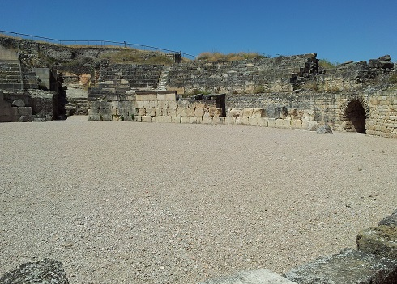
 |
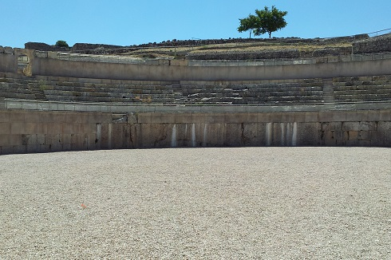 |
Aprovechando la pendiente del cerro y la antigua vaguada creció el
anfiteatro, dándole una forma casi redonda. De planta elíptica, su
eje mayor mide 74m y tiene una orientación este-oeste, donde se
hallan sus dos puertas principales; y su eje menor mide 66,20m.
La arena y cavea sur están parcialmente excavadas en la ladera del
cerro, de forma que al tallarse las gradas se obtenían sillares para
otras partes de la construcción, como ocurre en Tarragona y Carmona.
Como el nivel del suelo quedaba a la altura de la última grada, se
utilizaban scalae para descender a las distintas zonas de la cavea.
La vomitoria del lado sur comunicaba directamente con la puerta
principal de la ciudad, la puerta norte y el kardo maximus; mientras
que para acceder al lado norte era necesario subir por las
escaleras.
La parte norte y los dos
cunei externos de la cavea meridional, se construyeron sobre una
estructura de tres muros concéntricos de opus incertum, el exterior
y el central; y de opus vittatum, el muro interior que corría
paralelo al podium que delimitaba la arena.
|
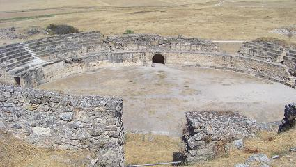 |
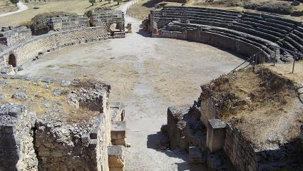
|
|
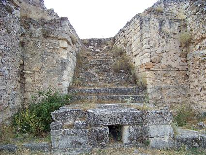 |
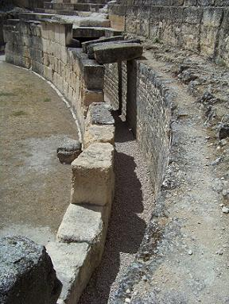 |
El espacio existente entre estos
tres muros se dividió con otros transversales formando una serie de
cajones rellenos hasta la altura de la arena de greda con cal. Era una
forma económica y característica de construir que facilitaba la
construcción, exigía un muro exterior sólido reforzado con pilares de
caliza embutido con opus incertum, para poder soportar la presión. Y para
evitar una presión excesiva en la parte superior de la fachada, se realizó
una serie de muros radiales y las bóvedas se rellenaron con cenizas. Su
altura seria de 18m. El exterior de la fachada norte seria de sillarejo
mediano, alternado con filas de ladrillos, excepto en la vomitorias 2º y
3ª que son de opus incertum. La fachada era reforzada por 13 machones de
sillares de opus quadratum.
El muro exterior es casi recto y se supone que seria un ludus, para la
formación de los gladiadores o un sacelum, santuario relacionado con
Hércules, que era la divinidad vinculada a los gladiadores y apareció una
inscripción en esta zona.
Al interior accedemos por las dos puertas del eje mayor, la puerta
Triumphalis ligeramente con pendiente hacia la arena y un pasillo lateral,
que une el exterior con un corredor paralelo al podium septentrional. La
puerta tiene una anchura de 4 a 6,50m, con tres arcos que la dividen en
tres sectores, el primero estaría descubierto y los otros dos serian
abovedado con opus caementicium cuyos restos aparecieron caídos, también
se conservan las primeras dovelas de sillares de caliza del primer arco.
|
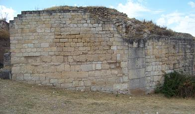 |
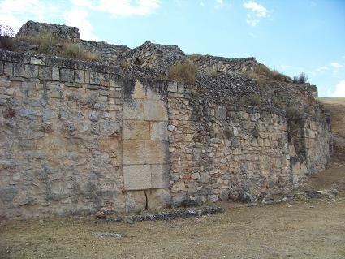 |
Mientras que la puerta occidental, es una empinada escalera tallada en la
roca de unos 4 metros de anchura, que se van reduciendo hacia la arena a
3,20m de anchura. También estaba dividido en tres arcos con sillares que
sobresalen hacia el interior del corredor; el primero junto a la arena
descubierto y los otros dos de opus caementicium para sostener la cavea.
La arena mide 41,7x34m, tiene una superficie de 1.122m2, uno de los más
pequeños de la península. La arena esta delimitada por un podium de unos
2,20m de altura media, que en su parte norte tiene otro muro y forman un
pasillo de 2,30m de altura y de 1,45 a 0,75m de anchura, que seria un
corredor de servicio y comunicación entre la parte este y oeste.
El desagüe de la arena se hacia por una cloaca de 0,50x0,36m que se abre a
ras de suelo bajo del podium y sale por la 2ª vomotoria del lado noreste.
La cavea esta dividida en 12 cunei, sectores que comunicaban con los 9 vomitoria, puertas de salida o entrada. La cavea estaba dividida en
dos partes, la ima y summa, dependiendo de la clase social. También
destacan sus 3 carceres, que eran habitaciones dedicadas a
servicio, donde guardarían las fieras, se prepararían los gladiadores o a
un sacelum o santuario.
|
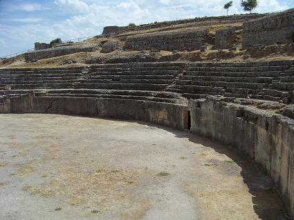 |
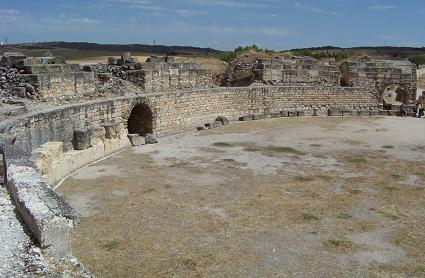 |
Tendría una capacidad de unas 5.500
personas sentadas.
Se utilizó hasta el siglo III
cuando se produjo en incendio cuyas huellas son visibles en el posible sacelum del anfiteatro; y
entre los siglos XVI y XVIII lamentablemente se utilizo como cantera para
el monasterio de Uclés.
Ver
Anfiteatros romanos
Teatro
El teatro de
Segóbriga, único de esta parte de la meseta y con el graderío mejor
conservado de la Hispania, esta situado a extramuros al este de la
puerta norte. En su construcción se aprovechó la ladera y parte de la
roca que se excavó para la grada. Los sillares se extrajeron de las
canteras al sur de la ciudad, a la otra orilla del río Cigüela.
Su construcción debió de empezarse en la época julio-claudia y se
inauguró en época de Tito y Vespasiano hacia el 78, según la
inscripción hallada. Tenia una capacidad para unas 2.000 personas.
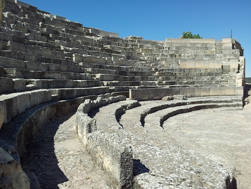
|
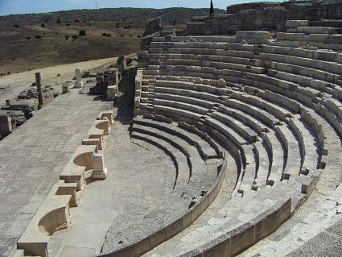 |
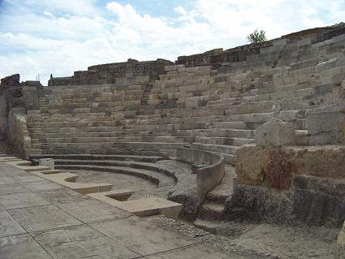 |
La cavea esta muy bien conservada y estaba dividida por medio de cinco scalae (escaleras) que dividían la grada en cuatro cunei (zona en
forma de cuña). La cavea quedaba dividida en tres partes por medios de
baltei (muritos), dando lugar a la ima, media y summa cavea, cada una
con cinco gradas.
|
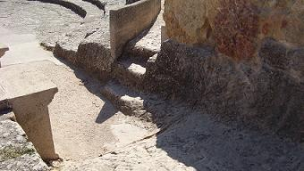 |
Detrás del baltei discurría un pequeño corredor,
praecinto, que servía como acceso y facilitaba el paso hacia la
vomitoria.
Según el nivel económico e influencia se ocupaba el graderío; los más
pobres y esclavos estarían arriba y abajo estaban las gradas más
cómodas que eran destinadas a las autoridades y personajes con un buen
status económico.
Gran parte de la grada se halla tallada en la roca, y el resto se
completo con hormigón revestido con sillares de roca caliza, que
lamentablemente fue robada para construir otras edificaciones como el
monasterio de Uclés. Se ha reconstruido con piedra artificial. |
La summa cavea no se halla, esta debería haberse apoyado parte en la
muralla, tras elevarse sobre un corredor abovedado, bajo el cual
discurría la calle que iba hacia la puerta norte. Se supone que sobre
esta estructura estaría el summum moenianum, una especie de tribuna
que enlazaría con el gimnasio a través de un criptopórtico sostenido
por pilastras con capiteles jónicos.
La orchestra esta rodeada de tres escalones escavados en la roca,
donde se sentarían las autoridades, entre ellas el ordo decurionum
(magistrados de la ciudad) sobre sella curulis (sillas de honor). En
frente de ella se halla el procaenium (tablero de madera sostenido por
pilares de piedra), donde actuaban y disponía de dos escaleras en el
pulpitum (pequeña fachada) para acceder a la orchestra y viceversa.
La scaena monumental esta prácticamente destruida, solo conserva sus
cimientos. Según los arqueólogos tubo que estar lujosamente adornada
con columnas de fustes estriados, salomónicas y con capiteles y
ricamente decorados; se pueden visitar en el museo de Segóbriga y
Cuenca. En los intercolumnios estarían las estatuas que representarían
musas y togados.
Detrás estaría un corredor por donde saldrían los actores y se
vestirían.
En el centro de la escena monumental se construyó una habitación
con forma trapezoidal, que estaría dedicada al culto imperial, y
al exterior de esta hacia el este se hayan los resto de un altar,
el basamento todavía se conserva.
|
Aula Basilical
En tiempos de Vespasiano se
levantó un gran edificio frente al foro, destinado a las
transacciones comerciales del lapis specularis. Para su
emplazamiento fue elegido un lugar bien comunicado en pleno
centro de la ciudad y con acceso directo desde la calle
principal, a través de una gran escalinata, hoy perdida. Era de
tres naves, sostenidas por 10 columnas corintias.
|
|
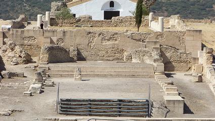 |
La nave
central, más ancha, terminaba en un gran ábside al que se
accedía por tres escalones, donde se cerraban las
operaciones de venta del “cristal”. En su excavación
aparecieron nueve capiteles corintios de gran tamaño.
Adosados a la columnata sureste, en la parte interior de la
nave, se conservan dos plintos que antiguamente sustentaron
sus respectivos pedestales con estatuas. La nave estuvo
pavimentada, pero no se han hallado sus losas con la
excavación. También se hallaron en la excavación parte de la
cornisa exterior y la cabeza de mármol de una persona mayor,
que ha sido identificada con el Emperador Vespasiano, que a
su vez reaprovechado un retrato antiguo de Nerón. También
apareció un altar dedicado a la diosa Fortuna.
Las naves laterales tienen cabecera rectangular, mientras
que la nave central termina en ábside con un mosaico blanco
y negro al que se accede a través de un pequeño espacio
rectangular.
|
|
|
|
|
Para acceder al ábside
hay que subir tres escalones restaurados. En época visigoda
y altomedieval el edificio tuvo un uso privado, alejado ya
de su primera función. Las evidencias arqueológicas indican
que sirvió para encerrar ganado, tal y como prueban dos
sillares vaciados en forma de pilas para abrevaderos. |
|
|
|
|
Foro
|
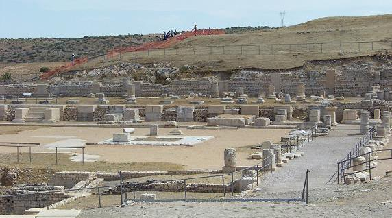 |
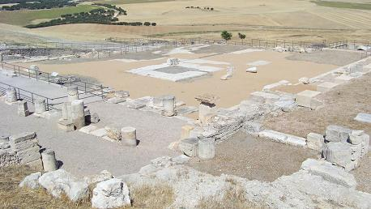 |
El foro de Segóbriga a
fecha de hoy se sigue excavando, esta formado por una plaza enlosada y mide
38,60m de norte a sur y 32,70m de este a oeste, obteniendo un área de
1.262m2. Más de la mitad del enlosado es originario y el restante se ha
repuesto para poder conservar mejor su área e impedir su degradación. El
área enlosada esta delimitada por una línea perimetral de sillares,
ligeramente elevada, a través de los cuales se accedía a los pórticos
laterales. A el se accedería por la parte oeste a través de un kardo, donde
debió existir una escalera monumental y un pórtico, presidido por un
conjunto escultural de bronce, del que se han recuperado algunos elementos.
En el centro del foro existió un monumento elevado de forma cuadrado con
escaleras, y en el que se hallarían una o varias estatuas; una de ellas se
recupero al excavar, estaba junto a este monumento y se supone que tenia
relación con la familia Imperial. De este monumento se conserva la primera
fila de sillares y se aprecian las huellas de la segunda. Este conjunto
estaría delimitado con una barandilla -balteus- de piedra anclada con
espigas de bronce y hierro.
|
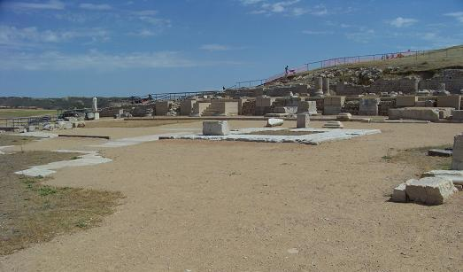 |
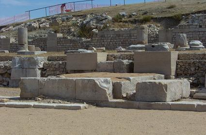 |
Delante de este monumento en la parte oeste había una inscripción de norte a
sur que se halló, pero lamentablemente fue robada. El texto estuvo formado
por letras de bronce de unos 32 cm. e insertadas en alvéolos. Esta técnica
consistía en labrar la piedra para insertar las letras y que estas quedaran
a ras de las losas y así evitar cualquier tropiezo u obstáculo paro los
peatones. "(.....? Proc?)ulus Spantamicus La(-c.12/14-)us forum sternundum
d(e) s(ua) p(ecunia) c(uravit/-erunt)". De la que se deduce que Proculus
Spantamicus fue el que sufrago la construcción del foro y nos permite
fecharla en la época central del mandato de Augusto. Se sabe que el foro
estaba totalmente construido antes de año 14 y fue el quien le concedió el
rango municipal.
Una parte de los monumentos hallados en el foro, fueron monumentos ecuestres
de personajes importantes de la ciudad. También se han hallado numerosas
inscripciones de patronos de Segóbriga como: C.Calvisius Sabinus, que
gobernó la Hispania citerior ; el consuegro de Tiberio M.Licinius Crassus
Frugi, otra la del escriba del Emperador Augusto, M. Porcius M. F. Pup.
En los lados del foro hubo otros monumentos, un altar dedicado al Emperador
Augusto, que presidía el pórtico meridional. En sus proximidades también se
colocó un monumento dedicado a la familia nativa de los Calventios, formado
por dos estatuas. Y en el pórtico oriental se colocó una estatua ecuestre
dedicada a un nativo llamado Manlius.
Otro elemento a destacar es el pozo cuadrado orientado con los ejes solares,
era un mundus, es decir, cuando se fundaba la ciudad este pozo contenía los
votivos relacionados con su construcción del recinto y se le calcula una
profundidad de ocho metros. Ha sido expoliado en varias ocasiones y solo
tiene material de relleno.
|
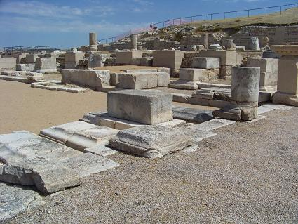 |
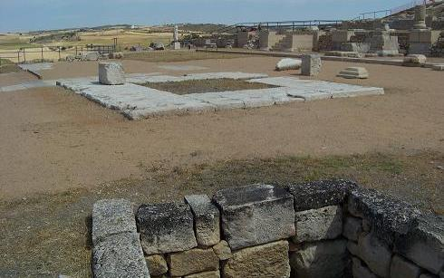 |
Al norte del foro, se construyó un criptopórtico subterráneo que sostenía
uno superior mide 35,54 x 9,89m y hoy en día se conservan los basamentos
cuadrados que servían para sostener el pórtico superior. En este se
realizarían las tareas administrativas de la ciudad la Basílica. A través de
sus umbrales se accedía a la nave porticada, parcialmente restaurada, se
supone que pudo utilizarse como archivo -tabularium-. En el piso superior
estaría la parte de la basílica dedicada al gobierno de Segóbriga. De este
piso se encontraron columnas pintadas de rojo con motivos cuadrados y
circulares y también se encontraron diversas placas de mármol que tendrían
un fin decorativo, aparecieron inscripciones, un pequeño pedestal y una
muñeca de marfil, una estatua togada, una cabeza de Agripina la mayor,
madre de Calígula.
|
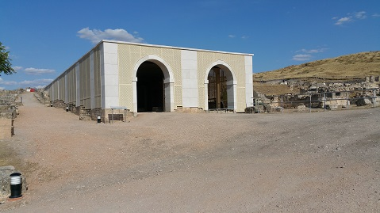 |
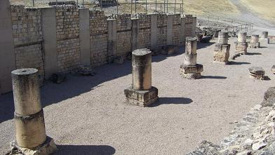 |
|
Al norte del criptopórtico septentrional estaría la Curia, el senado de la
ciudad. Sus sillares se expoliaron en época renacentista. Actualmente es un
criptopórtico de 18,36 x 11,76 m y se supone que ambos criptopórticos
estarían unidos por un arco.
El lado oriental del Foro
estuvo ocupado por la Basílica. Se construyó entre los años 15 a.e.c
y 10.
Se excavó entre 2004 y 2005, hallándose numerosos fustes de
columnas, capiteles y elementos del entablamento que fueron
utilizados para la construcción de los muros de las viviendas
instaladas en el interior del espacio basilical en época
tardorromana.
|
|
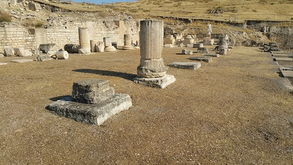 |
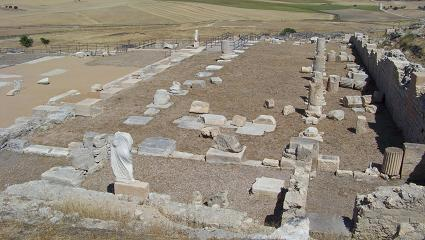 |
|
En el foro se han encontrado cinco fases de ocupación consecutivas y se
supone que su uso fue continuado hasta el siglo XVI y XVII que se expolio la
sillería para el recitado monasterio, tendremos que ir a visitarlo y admirar
la belleza de las columnas, sillares y.......................de Segóbriga.
Termas
Monumentales
|
|
|
En la parte alta de la ciudad junto a
la actual ermita se hallan las Termas monumentales.
A ellas se accedía a través del Kardo Maximus y formaban ellas sola una
-ínsula- manzana, ya que estaba delimitada por dos calles, una por el
sur y la otra escalonada por el este y por el norte y el oeste lo
delimitan las terrazas adaptadas al terreno.
Fueron edificadas en el siglo I.
Se construyó en la parte alta de la ciudad, lo que hacia garantizarse el
sol del invierno y el aire fresco del verano, compruébalo.
 |
Se accedía a
través de la parte sureste por unas escaleras de 4m de anchura, aun
conservadas, que discurre paralela al kardo maximus. Están situadas
junto al templo de culto imperial.
Miden 88m de longitud y 39m de ancho. Todo el perímetro esta rodeado por
un muro, que también realiza las funciones de contener los terrenos
aterrazados. Este muro esta realizado con sillares y opus caementicium,
encofrado con tablones de 30 a 35 cm según se puede apreciar hoy en día
en el exterior de la parte oriental.
Las termas presentan una disposición denominada lineal axial, el más
simple de los diseños, consiste en una ida y vuelta por las mismas
estancias. Al entrar accedíamos a la -palestra-
lugar de reunión, ejercicios, vestuario.... con una medidas de
29,25x18,50m, rodeado por un peristilo columnado, con 12 columnas a
cada lado. El desagüe de la piscina a travesaba la palestra y
salía por la esquina norte. Adosado a su muro oeste, al fondo del
patio había un pedestal donde se supone habría una estatua que
presidiría este recinto. |
|
| A través de la zona porticada se
accedía al frigidarium, por sendas puertas, aun se conserva el
umbral de la septentrional, junto a la pared este se construyó un
natatio cuadrado de unos 6 metros de lado, delimitada con unas
grandes losas verticales; en la esquina sur conserva una escalera de
bajada realizada con sillares, y el suelo esta recubierto con pequeños
ladrillos romboidales colocados a modo de opus spicatum o
espigado. Los dos espacios libres situados al norte y al sur de la
piscina, estarían destinados al descanso de los bañistas, separados por
dos muros lo que le confiere la forma de U. Esta sala la más amplia del
complejo era donde se reunían los amigos o donde se realizaban negocios;
estaba impermeabilizada con opus testaceum, según los
arqueólogos hacia el siglo IV este se recubrió posteriormente con
mosaico, ya restaurado, realizado con grandes teselas de hasta 3 cm. de
tamaño, que forman cenefas, bandas y cuadrados de color negro, rojo,
amarillo y blanco. Hoy se puede reconocer la geometría de dicho mosaico.
|
 |
Del frigidarium se pasaba a la
sala donde estaba el tepidarium por una puerta de 2,65cm. en el centro
de la sala. Es una sala rectangular de 14,70m de longitud por 6,40 de
anchura, esta realizado con opus caementicium con el exterior revestido
de sillarejo. Conserva su pavimento original de mortero de cerámica y
cal -opus testaceum-. En la parte sur tiene forma de ábside, seria una
pequeña piscina de agua templada, hoy solo se conserva el desagüe hacia
el pasillo sur.
 |
La puerta del ángulo sur daba acceso aun corredor para controlar los
desagües.
Seguidamente hallamos el caldarium, justo delante de la ermita se
aprecian los muros que lo delimitarían. Seria una estancia rectangular
de 14x8m, realizada con muros de opus caementicium de un metro de
grosor. En los laterales norte y sur de la ermita se hallarían los
restos de la -praefurnia- las bocas del horno de 1,20m de ancho y
delimitadas por sillares de arenisca, para poder refractar el fuego,
cuyos contacto se aprecia. Del suelo solo se conserva el opus testaceum,
a 1m por debajo del suelo del trepidarium, no se ha hallado el
hipocaustum ni las suspensurae, por donde discurriría el calor y sobre
el cual se hallaría el pavimento y piscina de agua caliente. En la actual ermita ocupa la zona
occidental de las termas. La ermita es rectangular y su ábside, se
supone que seria un laconicum. Originalmente en esta zona estaría
el caldarium y las saunas de sudor seco. |
|
|
|
Termas Teatro
|
Entre el Teatro y el decumanus
paralelo a la muralla se construyeron unas Termas, las denominadas
"Termas del Teatro". De fecha augustea se aprecian en ellas la
estructura mas bien irregular de época republicana.
 |
Una de las estancias que más nos
llaman la atención es el -apodyterium -vestuario con un banco
corrido para poder sentarse, con sus taquillas -cubiculi-; arqueadas
y que se supone tendrían una puertecita de madera.
En este vestuario se hallaron restos de un mosaico de -opus signium-
realizado con teselas incrustadas en un mortero de tejas y cal con
una inscripción; "(B)esso Abilop(um) Velcile(sis a)rtifex a
fudame(ntis)" , que nos indicaría en artista y su procedencia.
Lamentablemente no se conserva, pero gracias a Pelayo Quintero,
tenemos constancia de esta inscripción. A través del vestuario por el
oeste se accedía a una pequeña sala redonda que seria el -laconicum-
o sauna seca, con una gran pila circular -labrum-,para
refrescarse con agua fría. De esta sala pasábamos al -caldarium-,
con una pequeña piscina -alveolus- en el lado este. La zona de
servicio -praefurnium- donde se atendía el fuego estaba en la
habitación contigua junto a la muralla. |
 |
Entre este y el pasillo que daba
a la puerta abierta en la muralla estaban las -letrinae- donde se
aprecia el pequeño canal que atraviesa la muralla y sale al exterior. Desde el apodyterium también se
accedía al oeste a otra pequeña sala rectangular con un banco corrido
que se cree que era la parte de las termas destinada a las mujeres; se
extendía entre la muralla, el foro y el decumanus.
En el mencionado pasillo, al sur daba a una habitación cerrada que
pudiera ser una escalera para acceder al decumanus, que discurre a mayor
altura, mientras que en el lado oriental salía un largo corredor que
conducía al gimnasio, localizado al norte de las Termas.
Es un recinto rectangular en cuyo centro queda un espacio abierto que
podría ser un -natatio- o piscina, rodeado por un jardín o peristilo.
Por su parte occidental comunicaba con las Termas a través de un largo
corredor, seria el frigidarium.
Seguramente este complejo este inspirado en la tradición helenística
donde se formaba física e intelectualmente a los jóvenes del pueblo
asimilado, en las costumbres romanas y el culto imperial; de esta forma
se culturizaba a la elite del poblado y así al resto del pueblo.
Este conjunto es único en la península, Termas y Gimnasio unidos al
Teatro y a un Criptopórtico.
Ver
Termas Romanas |
|
|
|
|
|
Casa Caio Iulio Silvano
Era el procurador de las minas de
Lapis Especularis. Tenemos referencias de él en el altar dedicado a
a Zeus, en griego, que se halla en la casa junto a las termas
monumentales. El yeso traslucido se utilizaba como cristal para las
ventanas y en la decoración. La zona de producción alcanzó 100.000.-
pasos (150km) alrededor de la ciudad. Destacan las minas de Osa de
la Vega. La vivienda data del siglo III. Se conservan tres
estancias, la del altar, la estancia del mosaico geométrico, que se
conserva en el centro de interpretación y la estancia del banco
corrido.
Circo
La zona fue descubierta en
1804, pero fue en 2004 cuando los restos se atribuyen al circo. Se
calcula que tenia una capacidad de 10.000.- espectadores. Se
conserva parte del graderío sur y norte. La estructura tiene una
anchura de 83m, pero se desconoce su longitud de 300 a 400m. Se
conservan seis carceres. El
circo nunca llegó a acabarse. Su construcción data de mediados del
siglo II. Se levantó sobre una necrópolis de
incineración, que tenía estelas en el lugar donde fueron colocadas
como ocurre con las necrópolis de Pompeya y Ostia. Se ha documentado
la destrucción de más de cien sepulturas. Destaca la de la esclava
Iucunda.
Muralla
Prácticamente todo el perímetro del cerro conformaba la muralla de Segóbriga
unos 1.300m para protegerla. La muralla era un cuadrado de unas 10 hectáreas
y el único lado irregular es el tramo Sur debido a la dificultad del
terreno.
La muralla no posee torres y como ejemplo en su tramo Oeste se puede
apreciar los largos tramos rectos. Tres son las puertas identificadas, la
puerta norte, la oriental y la puerta nordeste.
El aparejo de la muralla es de doble parámetro de piedras con el interior
relleno de tierra y piedras pequeñas. En los lugares más visibles o más
sensibles, la muralla esta realizada con sillares y opus caementicium con un
grosor de 2,5 a 3m y una altura supuestamente de 4 a 6m.
Se cree que fue realizada por causas políticas cuando paso de ser ciudad
estipendiaría a municipium.
Puertas de la Ciudad
La puerta principal, es la llamada puerta norte, que cruzaba la ciudad hacia
el sur Kardo Maximus y estaba flanqueada por el Teatro y el Anfiteatro.
Sobre una base de opus caementicium de 1,50m de profundidad se levantarían
los sillares que conformarían la puerta principal de Segóbriga. Seguramente
seria una puerta sin torres y 1 ó 2 metros más alta que la muralla. Se
supone que seria construida cuando Segóbriga pasó a ser municipio.
Otra puerta es la puerta oriental, junto al Teatro. Es de planta octogonal y
mide 11,5m en diagonal. Esta cimentada con sillares, pero se supone que el
cuerpo superior, estaría construido por sillarejo como el Teatro. De esta
puerta como ya describimos en el Teatro por una calle abovedada a
continuación de la summa cavea se accedería al Kardo Maximus.
|
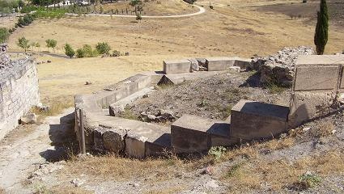 |
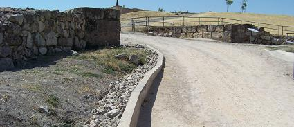 |
|
|
|
|
Lucus de
Diana
A 500m de la
ciudad al otro lado del rió Cigüela, hacia el suroeste al cruzar un
pequeño puente se halla una calzada romana muy bien conservada que
corta la roca. A su lado se aprecia la cantera utilizada para la
construcción del teatro.
Este lugar era un lucus, bosque sagrado de origen prerromano que
posteriormente fue dedicado a Diana. Se levantó un templo en honor a
la diosa, que fue muy dañado supuestamente después de una
celebración de los quintos del pueblo ante de irse al servicio
militar. Hay una reproducción en el museo, pero no tiene nada que
ver con el grabado del siglo XVIII.
Acueducto
|

El agua llegaba a la ciudad
por acueducto desde la actual Saelices. Se explotaban acuíferos
aprovechando el agua subterránea que existe cerca de la fuente de la
mar, al sur del pueblo. El agua recogida era conducida a través de
galerías talladas en la roca, y tras ser decantada se conducía por
tuberías de plomo y hormigón hasta Segóbriga, utilizando el desnivel
y aprovechando la presión del desnivel, ya que el origen estaba más
alto que la ciudad. |
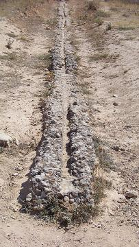
Ver
Acueductos Romanos |
El acueducto llegaba a la ciudad
por la zona donde se encuentra el museo, se pueden observar sus restos a
la izquierda del camino. El agua era conducida a un aljibe de
decantación y después se canalizaba a la ciudad. En el pueblo de
Saelices esta la llamada fuente del Acueducto.
Necrópolis
La ciudad de Segóbriga cuenta con
varias necrópolis. Una datada en el siglo I, donde aparecen
incineraciones infantiles junto a la muralla, y se tiene
conocimiento de una necrópolis mayor, con mausoleos familiares, en
las laderas situadas en la ladera noroeste de Segóbriga; también de
esta época son las incineraciones en urnas de vidrio halladas en el
cerro Carraplín. Posteriormente se creó otra necrópolis al noroeste de la ciudad
junto al arroyo del Yuncal, donde se haya un monumento funerario del
siglo I ó II decorado con pilastras estriadas y capiteles corintios.
A ambos lados de la calzada principal de entrada se hallaron unas
200 tumbas visigodas, es el conocido conjunto que se atraviesa al
visitar el yacimiento arqueológico.
Otra zona es la hallada al norte del acceso donde se hallaron
ajuares tardo romanos y un total de 63 incineraciones.
La necrópolis de incineración del
circo, estuvo en uso hasta principios del siglo II. Se ha
documentado la destrucción de más de cien sepulturas. Se destruyó
con la construcción del circo. Destaca la de la esclava Iucunda. |
|
Basílica
Visigoda
Situada fuera del casco urbano
mide 48 x26m. Tuvo tres naves separadas por 10 columnas a cada lado,
con un crucero central y un ábside con forma de herradura cerrada.
Debajo del crucero y del ábside tiene una cripta abovedada, a la que
se descendía por dos escalera, una hoy visible. Seria la tumba de
algún cristiano famoso de la zona y posteriormente se enterraron los
obispos y posteriormente los fieles. Al oeste de la basílica se
encuentran restos de un posible baptisterio exento.

|
*****************************
En la parte noreste del teatro se han hallado unas termas fuera del
recinto de la ciudad, no se conoce muy bien su uso, el estado en el
que están es muy lamentable; aun a si se reconoce el hipocausto con
las columnas de ladrillos del caldarium, restos de desagüe y
muros de las estancias. En época paleocristiana e hispano-visigoda,
fueron utilizadas como necrópolis, con lo que se supone que ya eran
ruinas. Fue tapado a la espera que un día se acometa su
investigación.
En el área cercana al Foro, en la
campaña de 2010 se han hallado restos de viviendas particulares
dentro de la ciudad. La vivienda romana encontrada y que está
terminándose de excavar es del siglo I.
Año 2013-2014, consolidación del
Anfiteatro y del Criptopórtico del Foro.
|
|
|
|
|